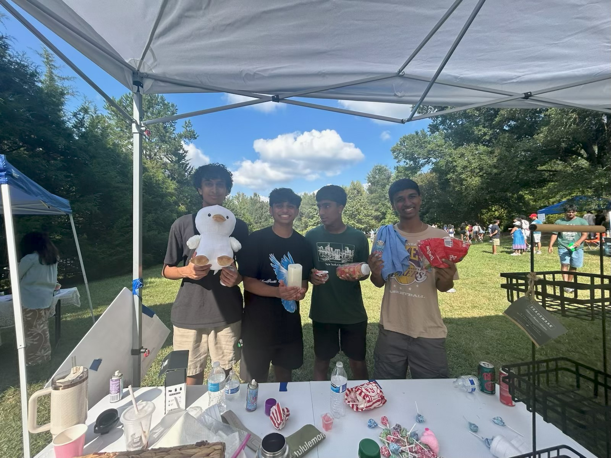
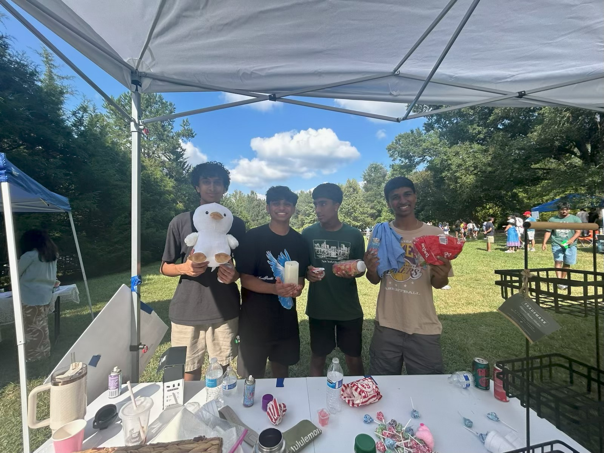
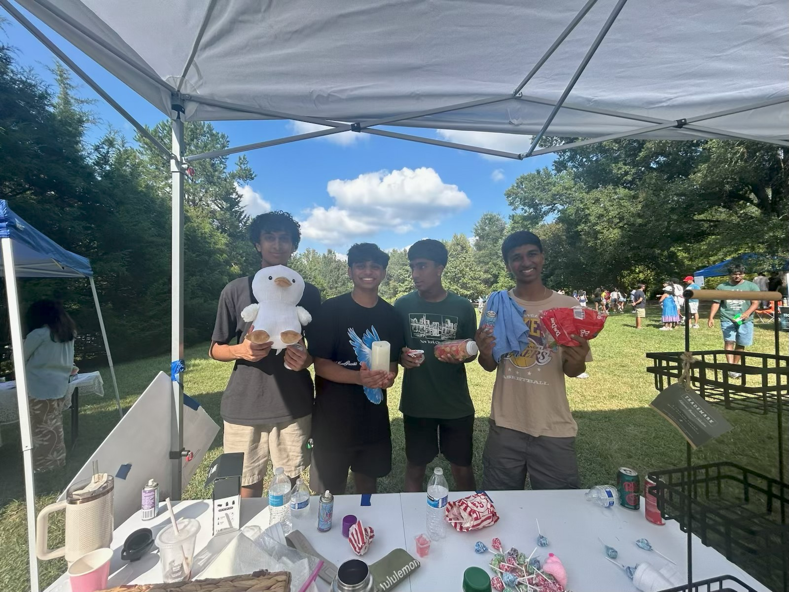

Operation Lifeline is a youth-led nonprofit organization dedicated to bridging healthcare gaps for underserved communities. We empower high school students to take action through fundraising, community outreach, and advocacy. Our mission is to provide financial support for children requiring medical care and to spread awareness about the healthcare challenges faced by uninsured and economically disadvantaged families in the greater Charlotte area.
Vision
We envision a future where every child—regardless of background—can access the medical care they need to thrive. By mobilizing youth leaders and building strong community networks, we aim to create a more equitable, compassionate healthcare landscape.
About Us
Smita Jayaprakash – Co-Founder & Co-President: Smita is a high school student passionate about medicine, community service, and equity in healthcare. She co-founded Operation Lifeline to help close the healthcare gap for underprivileged families in Charlotte. With experience in EMS, medical research, hospital internships, and leadership programs, Smita leads with compassion, creativity, and purpose.
Aarav Parikh – Co-Founder & Co-President: Aarav is a driven student with a deep interest in healthcare innovation and social impact. He helps organize fundraising events, lead partnerships, and expand Operation Lifeline’s mission across local communities.
Roshini – Co-Founder & Vice President: Roshini is a dedicated leader who coordinates events, manages outreach, and ensures every initiative runs with purpose and impact.
Recent & Upcoming Events
Bake Sale at Oldenburg Clubhouse – Partnered with Make-A-Wish
Efford Park Fundraiser – Raised $500
BCH Octoberfest Dessert Booth – Raised $300
SAT/ACT Tutoring Fundraiser – Ongoing
Leukemia & Lymphoma Society Campaign – Awareness & Fundraising

Get Involved
Want to volunteer, donate, or sponsor an event? We are always looking for passionate individuals and organizations to help expand our impact. Join the movement today!


 
